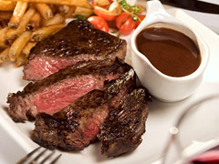

 Transport yourself for the afternoon to a corner bistro in Paris. Sip a glass of wine and enjoy rustic bistro cuisine. Learn classic bistro recipes that have been enjoyed over centuries in France. These classic dishes will be a favorite on your dinner table for years to come.
Stephen Harman is the newest addition to The Coastal Cupboard staff and he is welcomed with open arms as our in-house chef. He arrives with a varied culinary background, including: sous chef at the Mustard Seed, experiences throughout Europe in both food and wine, exposure to corporate cuisine in Chicago at J. Alexander’s and Weber Grill, and with his return to Charleston in 2008, executive chef of Hucks Lowcountry Table...
He brings with him a passion for cooking with fresh local produce, preference for flavoring dishes with herbs straight from his garden, and the desire to teach healthy, delicious, and cost effective recipes for toddlers to adults. When not working, Stephen enjoys spending time with his wife, Ruthie and his young son, Taver…word has it that Taver loves to help his dad in the garden and with the fresh herbs…from the dirt up! Stephen also likes to play golf and relax at the beach.